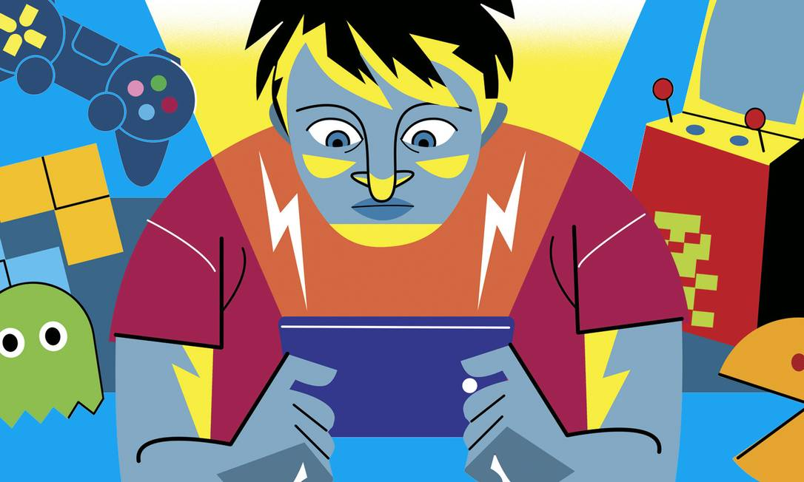

O mistério da dopamina no seu cérebro

Hoje, a gente veio começar a nossa série sobre como os jogos online conseguem prender tanto a nossa atenção. Afinal, hackearam a nossa mente?
A resposta curta é: sim, através da biologia. Toda vez que você consegue uma kill (morte) difícil, sobe de elo ou consegue um item raro, o nosso cérebro libera uma substância chamada dopamina, que causa uma sensação imediata de prazer e vitória. O problema é que o cérebro se acostuma rápido com essa dose de felicidade. Para sentir o mesmo prazer de antes, você começa a precisar de partidas cada vez mais longas e desafios maiores. É um ciclo que parece não ter fim, e é exatamente assim que o hábito vira vício. Mas como isso afeta a nossa rotina fora das telas? Quando o cérebro se acostuma com esses picos constantes de dopamina gerados pelas vitórias rápidas dos jogos, as tarefas do dia a dia começam a parecer extremamente chatas e sem graça. Estudar para uma prova, ler um livro ou até conversar com a família exigem um esforço mental que não traz aquela recompensa imediata que o jogo oferece.
Você já reparou como abrir um pacote de cartas no FIFA, uma caixa no Counter-Strike ou dar um "tiro" no Genshin Impact causa um frio na barriga? A psicologia chama isso de Reforço Intermitente. Se você ganhasse um item lendário toda vez que jogasse, o jogo perderia a graça rápido. O segredo do vício está na imprevisibilidade. O nosso cérebro fica obcecado pelo "quase lá". Quando você ganha um item comum, sua mente pensa: "Ah, na próxima com certeza vem o lendário!". Essa mecânica é exatamente a mesma usada nos caça-níqueis de cassinos, projetada para fazer você gastar seu tempo (e às vezes seu dinheiro) sem ver a hora passar.
Além da química do cérebro, existe outro truque psicológico muito forte chamado FOMO (da sigla em inglês para "Fear of Missing Out", ou "Medo de Ficar de Fora"). Os criadores de jogos entenderam perfeitamente que a gente odeia sentir que está perdendo algo. É por isso que existem os passes de batalha por tempo limitado, os eventos de temporada que só duram um fim de semana e as missões diárias. Se você não logar hoje, perde a recompensa exclusiva. Essa sensação de urgência faz com que jogar deixe de ser apenas um momento de lazer e passe a ser uma "obrigação" no seu dia a dia.
Outro ponto crucial é como o jogo vira um refúgio do mundo real. Quando as coisas na escola, no trabalho ou nos relacionamentos ficam difíceis, o jogo oferece um ambiente onde você tem controle total. Lá dentro, as regras são claras: se você se esforçar, ganha experiência e evolui. Essa sensação de progresso constante é extremamente recompensadora, especialmente em dias nos quais nada parece dar certo na vida real. O problema não é usar o jogo para relaxar, mas sim quando ele passa a ser a única forma que você encontra para lidar com sentimentos ruins ou estressantes.
No fim das contas, saber disso tudo não significa que você precisa deletar seus jogos favoritos e nunca mais jogar. O videogame é uma forma incrível de arte, entretenimento e socialização. A chave de tudo está na consciência: quando você entende como essas mecânicas funcionam, você para de jogar no "piloto automático". Retomar o controle sobre o seu tempo é perceber que o jogo deve servir para divertir você, e não para controlar a sua rotina.